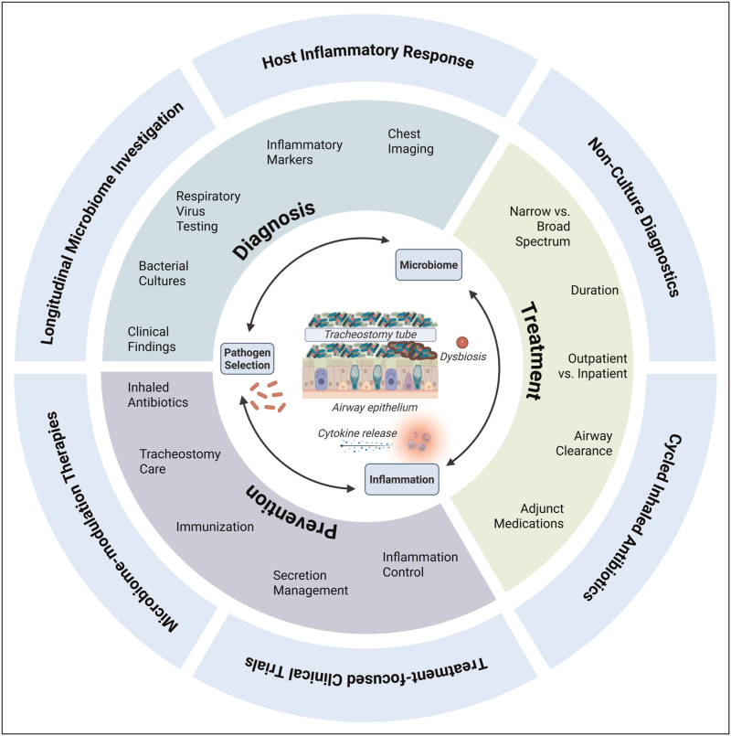
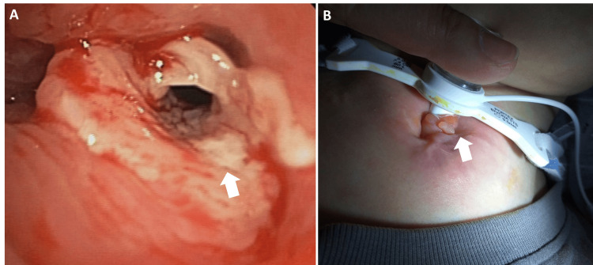
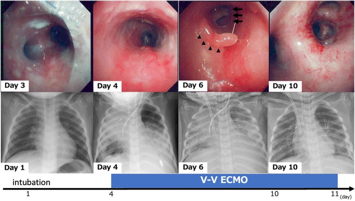
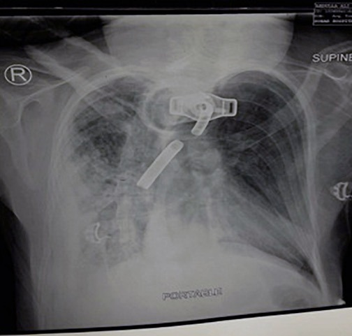

6124 — Nhiễm trùng liên quan ống mở khí quản ở trẻ / Pediatric tracheostomy-associated infection (TRAIN)
Tags: pattern:dam-mo-phoi pattern:thanh-khi-quan vung:duong-tho-nhi protocol:X-quang-nguc protocol:CT-co-nguc protocol:cay-dich-khi-quan
Mức chắc chắn (certainty): tổng hợp y văn (literature synthesis) — tổng quan cơ chế và thực hành (Curr Opin Pediatr 2026, PMC13152059); đoàn hệ 6 bệnh viện 542 đợt nhập viện/365 trẻ về ngưng kháng sinh sớm khi PCR virus dương (Pediatr Pulmonol 2026, PMC13179731); ca nguyên văn viêm thanh khí quản do vi khuẩn có ảnh X-quang + nội soi theo ngày (Pediatr Int 2025, PMC12369452); ca nguyên văn steeple sign (Cureus 2024, PMC11293875); ca ống mở khí quản gãy–di trú gây viêm phổi (Oman Med J 2020, PMC7157438); hình u hạt lỗ mở (Cureus 2026, PMC12873625). Không gắn một bệnh án đơn lẻ cho phần số liệu.
1. Tổng quan bệnh học – cơ chế hình ảnh: vì sao "cấy dương tính" là trạng thái mặc định, không phải chẩn đoán
- Ống mở khí quản là một bề mặt lạ nằm trong đường thở có niêm mạc ẩm: trong vài giờ, protein của vật chủ bám thành lớp màng; vi khuẩn (kể cả Gram âm và P. aeruginosa) tạo màng sinh học (biofilm) nhiều loài, có ma trận polysaccharide bảo vệ khỏi kháng sinh và kháng thể. Biofilm không gây viêm cho tới khi bị phá vỡ (hút đờm, cọ rửa, nhiễm virus) và giải phóng vi khuẩn với "nở hoa" (bloom) của loài vốn đã cư trú. Vì thế hít vào ống = hít vào một cộng đồng vi khuẩn, không phải "đường thở vô khuẩn bị nhiễm".
- Hệ quả định lượng — dịch hút khí quản (tracheal aspirate, TA) dương tính là chuyện thường: 25–87% mẫu TA mọc vi khuẩn; một trẻ có ống được cấy trung vị 4 lần/năm. Là xét nghiệm chẩn đoán, TA chỉ đạt độ nhạy 27% và độ đặc hiệu 85% so với chẩn đoán lâm sàng "nhiễm đường hô hấp dưới"; và loài mọc được không dự báo bệnh: S. pneumoniae, H. influenzae, M. catarrhalis có liên quan với chẩn đoán, còn P. aeruginosa, S. aureus, S. maltophilia thì KHÔNG — trong một nghiên cứu đa trung tâm, P. aeruginosa trên TA không làm thay đổi xác suất được điều trị như TRAIN.
- Vì sao X-quang không phân biệt được "nhiễm" với "xẹp": hình mờ trên X-quang chỉ nói phế nang bị lấp (dịch, mủ, tế bào, hoặc không khí bị hút mất). Ở trẻ có ống, nút nhầy trong lòng phế quản gây xẹp thùy với mờ đồng nhất + mất thể tích (khe di lệch, trung thất kéo, cơ hoành lên) — mô hình giống viêm phổi nhưng không có viêm phổi. Vì vậy mọi đám mờ mới phải đọc theo học thuyết mất thể tích (bài 001) trước khi gọi "viêm phổi".
- Vì sao dấu hiệu lâm sàng cũng không đặc hiệu: ho và màu đờm là dấu hiệu không đáng tin; đồng thuận BrighT STAR yêu cầu ≥ 1 dấu hiệu toàn thân VÀ ≥ 1 dấu hiệu hô hấp mới coi là nhiễm khuẩn đường hô hấp dưới. Ngay cả vậy, 16–56% trẻ không được chẩn đoán TRAIN vẫn có bạch cầu mức "trung bình" trở lên trên nhuộm Gram đờm — tức viêm đường thở mạn đủ để làm nhiễu xét nghiệm.
- Vì sao "không nhiễm" vẫn nguy hiểm: TRAIN là nguyên nhân nhập viện và tử vong hàng đầu ở trẻ có ống — tử vong nội viện 1–4% mỗi đợt, chi phí > 900 triệu USD/năm ở Mỹ. Nhưng điều trị oan cũng có giá: kháng sinh kéo dài làm tăng vi khuẩn đa kháng, C. difficile, và tăng thời gian nằm viện.
- Bằng chứng mới nhất đổi thực hành: ở 542 đợt nhập viện vì nghi nhiễm khuẩn có PCR virus dương (rhinovirus 52%, SARS-CoV-2 12%, RSV 11%), chỉ 28% được ngưng kháng sinh sớm. Nhóm điều trị đủ liệu trình nằm viện 8,6 ngày so với 7,0 ngày khi ngưng sớm (+23%, KTC 5–45%), trong khi chuyển ICU muộn 14,6%, tử vong 0,9%, tái nhập viện 30 ngày 8,3% — không khác giữa hai nhóm.

2. Mẫu hình + chẩn đoán phân biệt theo vị trí (Gamut)
- Mẫu hình "trẻ có ống mở khí quản sốt + tăng tiết + đám mờ mới trên X-quang": đây là chỗ giao của 3 nhóm — nhiễm (virus, vi khuẩn, hỗn hợp), cơ học (nút nhầy/xẹp, u hạt, ống sai vị trí) và biến chứng cấu trúc (áp-xe, rò khí–thực quản, dị vật).
- Gamut theo vị trí tổn thương (đọc từ ống ra ngoài):
- Trong lòng ống: nút nhầy/vảy tiết, mảnh ống gãy, dị vật (bài 6100).
- Lỗ mở – khí quản trên lỗ mở: u hạt, sụp thành trước, hẹp (bài 6100, 3047).
- Khí quản – phế quản: viêm thanh khí quản màng giả/do vi khuẩn, màng sợi – giả mạc, viêm khí quản do ống.
- Nhu mô phổi: viêm phổi do vi khuẩn (TRAIN), viêm phổi do virus, viêm phổi hít sặc, xẹp phổi do nút nhầy, áp-xe.
- Màng phổi/trung thất: tràn dịch – mủ màng phổi, tràn khí, tràn khí trung thất (biến chứng của thủ thuật/barotrauma).
- Đường nối bất thường: rò khí–thực quản (bài 6123).
- Gamut theo hình thái mờ trên X-quang/CT: mờ đồng nhất + mất thể tích = xẹp; mờ đông đặc có phế quản hơi = lấp phế nang (viêm phổi, phù, xuất huyết); mờ dạng lưới–nốt hai bên = virus/viêm phổi kẽ; mờ tròn có vỏ = áp-xe; mờ đáy phổi hai bên đối xứng = xẹp do tư thế, hay gặp ở trẻ nằm lâu.
- Ba câu hỏi phải trả lời trước khi gọi "TRAIN": (1) có mất thể tích không (xẹp thay vì viêm); (2) có dấu hiệu toàn thân + hô hấp theo BrighT STAR không; (3) có biến chứng cấu trúc cần can thiệp không (áp-xe, mủ màng phổi, dị vật, rò) — câu (3) là lý do chính để chụp CT.
3. Bảng so sánh phân biệt (ma trận đối chiếu)
| Thực thể (entity) | Hình ảnh điển hình (X-quang/CT/nội soi) | Chốt vào (rule-in) | Chốt loại (rule-out) | Gợi ý xác nhận |
|---|---|---|---|---|
| Viêm phổi do vi khuẩn (bTRAIN) | Đông đặc mới, có phế quản hơi, không mất thể tích; có thể một thùy | ≥ 1 dấu hiệu toàn thân + ≥ 1 dấu hiệu hô hấp (BrighT STAR) + đám mờ mới | Mờ kèm mất thể tích (xẹp) hoặc mờ cũ không đổi | Lâm sàng + X-quang; không dựa vào TA dương tính |
| Viêm phổi do virus | Mờ lưới–nốt hai bên, dày quanh phế quản, không đông đặc thùy | PCR virus dương + hình ảnh phù hợp | Đông đặc thùy đơn độc, đáp ứng kháng sinh nhanh | PCR đa tác nhân; ngưng kháng sinh sớm |
| Xẹp phổi do nút nhầy | Mờ đồng nhất, mất thể tích: khe di lệch, trung thất kéo, cơ hoành lên, không phế quản hơi khi tắc hoàn toàn | Mất thể tích + tái thông sau hút/nội soi | Mờ không đổi thể tích, có phế quản hơi | So phim cũ; nội soi/hút; X-quang lại sau hút |
| Viêm phổi hít sặc | Đông đặc thùy dưới bên phải hoặc hai bên vùng phụ thuộc, hay tái diễn cùng vị trí | Tiền sử sặc/khó nuốt + đông đặc vùng phụ thuộc | Hình ảnh thay đổi vị trí, không liên quan bữa ăn | VFSS/FEES (bài 6123); cân nhắc che phủ kỵ khí |
| Viêm thanh khí quản do vi khuẩn (màng giả) | X-quang: steeple sign (hẹp dưới thanh môn); nội soi: mủ bám chu vi, màng giả, loét niêm mạc | Nội soi thấy mủ/màng trong lòng khí quản | Chỉ hẹp dưới thanh môn đơn thuần, đáp ứng corticoid (croup) | Nội soi ống mềm + cấy; steeple sign không đặc hiệu |
| U hạt quanh lỗ mở | Nội soi: khối đỏ, dễ chảy máu quanh/trên lỗ mở; CT: mô mềm trong lòng | Khối trong lòng chắn đầu ống, tăng dần theo thời gian có ống | Niêm mạc nhẵn, không khối | Nội soi (bài 6100) |
| Dị vật/mảnh ống gãy | X-quang: cấu trúc cản quang hình ống trong khí quản/phế quản; phổi phía dưới mờ/xẹp | Vật cản quang trong lòng phế quản + mờ phổi cùng bên | Ống đúng vị trí, không mảnh rời | Soi ống mềm lấy dị vật |
| Áp-xe phổi / mủ màng phổi | CT: ổ dịch hoá có vỏ ngấm thuốc, mức khí–dịch; màng phổi dày, vách | Ổ dịch có vỏ + màng phổi dày/vách | Đông đặc đặc, không hoá dịch | CT có cản quang; siêu âm màng phổi |
| Rò khí–thực quản | VFSS: thuốc từ thực quản sang khí quản; CT nằm sấp thấy đường rò | Dòng thuốc thực quản → khí quản | Chỉ hít sặc qua thanh môn từ trên xuống | Nội soi + CT nằm sấp (bài 6123) |
4. Protocol chụp + hệ phân độ & quyết định điều trị
- X-quang ngực thẳng tại giường: chỉ định khi có dấu hiệu hô hấp mới hoặc nghi biến chứng — không chụp thường quy mỗi đợt sốt. Đọc theo trình tự: thể tích phổi → vị trí đầu ống → mờ mới → màng phổi → khí ngoài phổi.
- CT ngực (liều thấp, ≤ 1 mm, có cản quang khi nghi áp-xe/mủ màng phổi) khi: nghi biến chứng (áp-xe, mủ màng phổi, tràn khí trung thất), xẹp không hồi phục sau hút, hoặc nghi dị vật/tổn thương lòng khí quản (thêm CT cổ, dựng mặt phẳng coronal). CT không dùng để chẩn đoán TRAIN — không có ngưỡng HU/độ dày thành nào đủ đặc hiệu cho TRAIN.
- Cấy dịch hút khí quản — quy tắc dùng (3 mục đích khác nhau):
- Chẩn đoán TRAIN: không lấy thường quy; nếu lấy, kết quả không đủ để mở kháng sinh (Se 27%/Sp 85%).
- Định hướng kháng sinh: có thể dùng khi đã quyết định điều trị, để thu hẹp phổ — không dùng để bắt đầu.
- Giám sát lúc khoẻ: không khuyến cáo (ATS 2025, BrighT STAR).
- Thời gian kháng sinh: không có khuyến cáo dựa trên bằng chứng; thực hành trung vị 7 ngày (IQR 3–11) ở 548 trẻ; hai nghiên cứu hồi cứu cho thấy liệu trình ≤ 6 ngày không làm tăng tiến triển thành viêm phổi, điều trị lại hay tử vong. Ngưng sớm khi có PCR virus dương làm giảm 1,6 ngày nằm viện mà không tăng biến cố.
- Che phủ kỵ khí: khi nghi hít sặc (bằng chứng hít sặc, thần kinh nặng, trào ngược) — theo đồng thuận ATS 2025, không dùng thường quy cho mọi TRAIN.
- Dự phòng bằng kháng sinh hít: tobramycin hít theo chu kỳ 28 ngày dùng / 28 ngày nghỉ; 4 nghiên cứu nhỏ (n = 6–42, trước–sau, không nhóm chứng) cho thấy giảm số đợt TRAIN phải dùng kháng sinh toàn thân và giảm nhập viện tới 12 tháng — bằng chứng yếu.
- Làm sạch đường thở: ở 770 trẻ có bệnh thần kinh nhập viện vì nhiễm hô hấp, tăng cường làm sạch đường thở không làm khác thời gian về mức hỗ trợ hô hấp ban đầu hay thời gian nằm viện; đồng thuận vẫn khuyến cáo tăng tần suất so với nền khi trẻ dưới mức hỗ trợ hô hấp cơ bản.
flowchart TD
A[Trẻ có ống mở khí quản: sốt/tăng tiết/khó thở] --> B[Đánh giá BrighT STAR: >=1 dấu hiệu toàn thân + >=1 dấu hiệu hô hấp?]
B -->|Không| C[Tìm nguyên nhân khác: nút nhầy, u hạt, ống sai vị trí, trào ngược]
B -->|Có| D[X-quang ngực + PCR virus]
D --> E{PCR virus dương?}
E -->|Có| F[Xử trí hỗ trợ; cân nhắc NGƯNG kháng sinh sớm, theo dõi 24-48 giờ]
E -->|Không| G[Kháng sinh theo kinh nghiệm, dựa vào tiền sử cấy]
F --> H{Xấu đi hoặc mờ mới?}
G --> H
H -->|Có| I[CT ngực: áp-xe, mủ màng phổi, dị vật, rò?]
H -->|Không| J[Đánh giá lại ngày 3; thời gian 5-7 ngày]
I --> K{Biến chứng cần can thiệp?}
K -->|Có| L[Dẫn lưu/mổ/nội soi + kháng sinh đích]
K -->|Không| J
5. Biến thể bình thường và cạm bẫy
- Biến thể bình thường: mờ đáy phổi hai bên ở trẻ nằm lâu do xẹp phụ thuộc, hết khi thay đổi tư thế/vỗ rung; dày niêm mạc khí quản nhẹ quanh đầu ống trên CT; bóng khí nhỏ quanh lỗ mở ngay sau thay ống.
- Cạm bẫy 1 — cấy dương tính = điều trị: 25–87% mẫu TA mọc vi khuẩn lúc trẻ hoàn toàn khoẻ; P. aeruginosa trên TA không dự báo TRAIN. Điều trị theo cấy đơn thuần là nguyên nhân chính của kháng sinh dư thừa.
- Cạm bẫy 2 — đọc "mờ đáy phổi" thành viêm phổi: xẹp do nút nhầy có mất thể tích; nếu không kiểm tra khe/trung thất/cơ hoành, trẻ sẽ nhận kháng sinh cho một tổn thương chỉ cần hút.
- Cạm bẫy 3 — bỏ sót dị vật/mảnh ống gãy: ca 29 tuổi (minh họa nguyên lý, không phải trẻ em) mang ống 14 năm không đổi, vào viện với SpO₂ 82%, RR 30, HR 160; X-quang cho thấy mảnh ống gãy nằm trong phế quản gốc phải, kèm viêm phổi bên phải. Đây là "nhiễm trùng" do nguyên nhân cơ học — kháng sinh đơn thuần không giải quyết.
- Cạm bẫy 4 — u hạt giả "viêm khí quản": khối mô hạt quanh lỗ mở không phải nhiễm trùng và không đáp ứng kháng sinh; nó chắn đường thở và gây xẹp tái diễn.
- Cạm bẫy 5 — PCR virus dương không loại trừ bội nhiễm: nhưng dữ liệu 542 đợt cho thấy tỉ lệ chuyển ICU muộn 14,6% và tử vong 0,9% không khác khi ngưng kháng sinh sớm → theo dõi sát 24–48 giờ quan trọng hơn "điều trị cho chắc".
- Cạm bẫy 6 — "không sốt thì không nhiễm": trẻ có bệnh thần kinh nặng có thể hạ thân nhiệt hoặc không tăng bạch cầu; BrighT STAR tính cả hạ nhiệt độ và bạch cầu giảm.

6. Tự lượng giá — Blind Quiz
Ca 1 — trẻ 2 tuổi, ho "ông ổng" 5 ngày sau cúm, diễn tiến nặng dần

- Gợi ý lâm sàng: chẩn đoán ban đầu là croup, đã dùng adrenaline khí dung + corticoid; ngày 3 sốc nhiễm khuẩn, phải thở máy rồi ECMO.
- Câu hỏi: Hàng trên và hàng dưới là hai phương pháp gì? Dấu hiệu nào ở ngày 3–6 giải thích thất bại với điều trị croup? Vì sao phổi trên X-quang "không tương xứng" với mức nặng lâm sàng?
Bấm để hiện đáp án (findings + chẩn đoán)
- Dấu hiệu (findings): hàng trên là nội soi ống mềm: ngày 3 mủ bám chu vi niêm mạc khí quản lan ra phế quản ngoại vi; ngày 4 niêm mạc đỏ, phù; ngày 6 mảng niêm mạc bong, lồi vào lòng gây hẹp phế quản (mũi tên); ngày 10 hồi phục. Hàng dưới là X-quang ngực các ngày 1–4–6–10 kèm dòng thời gian đặt ống → V-V ECMO.
- Chẩn đoán (diagnosis): viêm thanh khí quản do vi khuẩn (bacterial tracheitis) do MRSA — biến chứng sốc nhiễm khuẩn, ARDS; V-V ECMO ngày 4–11, cai máy ngày 18, ra viện ngày 42.
- Vì sao "không đáp ứng croup" là chốt: croup đáp ứng adrenaline khí dung + corticoid; viêm thanh khí quản do vi khuẩn có màng mủ/màng giả trong lòng nên không cải thiện và cần đặt ống + kháng sinh. Tỉ lệ phải đặt ống 70–90%.
- Vì sao X-quang "nhẹ" hơn lâm sàng: tổn thương nằm trong lòng khí quản–phế quản lớn (màng, mủ, bong niêm mạc) — X-quang chỉ thấy hệ quả (xẹp, mờ) và có thể bình thường dù đường thở gần tắc.
- Nguồn ảnh: Kano K và cs., Pediatr Int 2025 (PMC12369452), CC BY 4.0 — Hình 1.
Ca 2 — trẻ 5 tuổi, ho, rít, khó thở tăng nhanh trong 2 giờ

- Gợi ý lâm sàng: sốt và ho 1 tuần, đã dùng corticoid uống + adrenaline khí dung; nay thở rít, co kéo nặng, không đáp ứng; CRP 38,5 mg/L, bạch cầu 22,93 × 10³/µL (neutrophil 17,95).
- Câu hỏi: Dấu hiệu mũi tên cam tên là gì? Nó chốt chẩn đoán gì, và loại trừ được gì? Bước tiếp theo?
Bấm để hiện đáp án (findings + chẩn đoán)
- Dấu hiệu (findings): hẹp dưới thanh môn hình "tháp chuông" (steeple sign) — mũi tên cam đánh dấu đoạn hẹp ngay dưới dây thanh; phổi không có đông đặc.
- Chẩn đoán (diagnosis): viêm thanh khí quản do vi khuẩn (ban đầu nghĩ croup) — cấy dịch phế quản ra Streptococcus pyogenes; đặt ống ngày 1, cai ngày 5, ra viện ngày 8, không di chứng.
- Chốt vào/loại ra: steeple sign chỉ nói "có hẹp dưới thanh môn", gặp ở cả croup — nó không chốt vi khuẩn và không loại trừ viêm nắp thanh môn (khi đó tìm thumb sign). Chốt thật là không đáp ứng corticoid/adrenaline + mủ trong lòng khí quản.
- Vì sao: niêm mạc dưới thanh môn là chỗ hẹp nhất của đường thở trẻ; phù 1 mm làm giảm tiết diện rất nhiều (định luật Poiseuille, xem bài 6100), nên triệu chứng nặng nhanh.
- Nguồn ảnh: Moreira M và cs., Cureus 2024 (PMC11293875), CC BY 4.0 — Hình 1.
Ca 3 — trẻ có ống mở khí quản, sốt cao, bão hòa 82%, thở nhanh

- Gợi ý lâm sàng: mở khí quản nhiều năm, ống chưa từng được thay; nay sốt cao, khó thở, giảm tri giác.
- Câu hỏi: Có mấy bất thường trên phim? Vì sao đây không phải "TRAIN đơn thuần"? Xử trí khác gì so với một đợt viêm phổi thường?
Bấm để hiện đáp án (findings + chẩn đoán)
- Dấu hiệu (findings): (1) mảnh ống cản quang hình ống nằm trong phế quản gốc phải; (2) đám mờ đông đặc phổi phải quanh mảnh ống; (3) ống mở khí quản còn tại lỗ mở nhưng mất phần đầu (flange gãy).
- Chẩn đoán (diagnosis): mảnh ống mở khí quản gãy – di trú vào phế quản gốc phải, gây viêm phổi hít sặc/dị vật — phải lấy dị vật bằng nội soi, không chỉ kháng sinh.
- Vì sao không phải TRAIN đơn thuần: đám mờ là hệ quả của tắc nghẽn cơ học; cấy đờm có thể dương tính nhưng nguồn gốc là dị vật. Ca gốc (người lớn 29 tuổi, ống kim loại dùng 14 năm) minh họa nguyên lý: không đổi ống định kỳ → gãy do mỏi vật liệu.
- Xử trí: nội soi ống mềm gắp mảnh; kiểm tra toàn bộ ống và thay ống theo lịch; kháng sinh sau khi giải quyết tắc nghẽn.
- Nguồn ảnh: Kashoob M và cs., Oman Med J 2020 (PMC7157438), CC BY-NC 4.0 — Hình 1 (ca người lớn, dùng minh họa nguyên lý; không đại diện bệnh cảnh nhi).
Bài liên quan chéo
- 6100 – Chăm sóc, biến chứng & cai ống mở khí quản ở trẻ
- 6123 – Rối loạn nuốt và hít sặc ở trẻ có ống mở khí quản
- 3047 – Hẹp khí quản sau đặt nội khí quản ở trẻ
- 3044 – Catheter tĩnh mạch trung tâm ở trẻ
- 6101 – Xẹp phổi một bên tái diễn ở trẻ BPD/TBM
- 011 – Tiểu thùy phổi
Ảnh
images/6124_nhiem-trung-ong-mo-khi-quan_So-do_CurrOpinPediatr-PMC13152059-F1.jpg— Morrison 2026 (PMC13152059), CC BY-NC-ND 4.0, nguyên bản, không chỉnh sửa.images/6124_nhiem-trung-ong-mo-khi-quan_Xquang-Noisoi_PediatrInt-PMC12369452-F1.jpg— Kano 2025 (PMC12369452), CC BY 4.0.images/6124_nhiem-trung-ong-mo-khi-quan_X-quang_Cureus-PMC11293875-F1.jpg— Moreira 2024 (PMC11293875), CC BY 4.0.images/6124_nhiem-trung-ong-mo-khi-quan_X-quang_OmanMedJ-PMC7157438-F1.jpg— Kashoob 2020 (PMC7157438), CC BY-NC 4.0.images/6124_nhiem-trung-ong-mo-khi-quan_Noi-soi_Cureus-PMC12873625-F2.jpg— Cureus 2026 (PMC12873625), CC BY 4.0.- Nguồn, giấy phép từng ảnh:
images/CREDITS.md.
Không dùng để chẩn đoán độc lập khi chưa có người hướng dẫn.